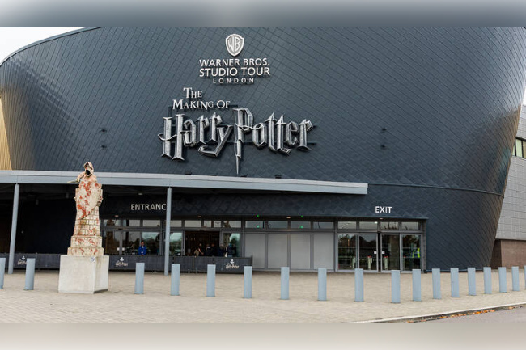

Les Studios Harry Potter - Voyage Magique
🏰 Les Studios Warner Bros

Les Studios Warner Bros. à Leavesden, près de Londres, en Angleterre, sont le cœur battant de la création cinématographique de la saga Harry Potter. Sur plus de 7 hectares, ces studios accueillent les fans du monde entier pour découvrir les décors, les costumes et les effets spéciaux qui ont donné vie à l'univers magique de Poudlard.
Adresse : Studio Tour, Leavesden, Watford, Hertfordshire WD25 7LS, Royaume-Uni
⚡ Attractions et Salles
La Grande Salle : Explorez la légendaire Grande Salle de Poudlard, le cœur du château magique où se déroulent les banquets et les événements importants.
Le Bureau de Dumbledore : Montez dans le fauteuil du directeur et admirez la collection impressionnante de souvenirs magiques.
Les Salles Communes : Découvrez les salles communes des quatre maisons de Poudlard avec leurs décors originaux et leurs ambiances uniques.
L'Allée Diagonale : Flânez dans cette célèbre rue magique complètement reconstituée avec ses boutiques et son atmosphère enchantée.
🧙 Expériences Magiques
Créer une Potion : Participez à un cours de potions où vous pourrez créer vos propres potions magiques sous la supervision des maîtres de potions.
La Baguette Magique : Visitez la boutique de Ollivander et découvrez votre baguette magique personnelle qui vous choisira.
Vols au-dessus de Poudlard : Envolez-vous sur un balai pour survoler le château magique dans une expérience immersive inoubliable.
Boutiques et Restaurants : Explorez les boutiques thématiques et dégustez des mets magiques comme le Beurre de Cacahuète à la Biere ou une part de Tarte au Citron de Dobby.
📅 Informations Pratiques
Horaires : Ouvert toute l'année (sauf quelques jours de fermeture exceptionnelle)
Durée recommandée : 3-4 heures minimum pour profiter pleinement de l'expérience
Réservations : Fortement conseillé de réserver vos billets en ligne à l'avance sur le site officiel
Transport : Des navettes sont disponibles depuis la gare de Watford Junction et les aéroports de Londres
Parking : Un parking gratuit est disponible sur le site des studios
Tarifs : Consultez le site officiel pour les tarifs actuels et les offres spéciales
Site officiel : www.wbstudiotour.co.uk